|
Resolución |
|
| Traslación | |
Ruido Perlin: Orígen
"El modelo conceptual del ruido Perlin fue descubierto en 1982 por Ken Perlin como resultado de su trabajo de generación de texturas para la película Tron. Desde entonces, el ruido Perlin, y pequeñas variantes posteriores (como el ruido Simplex) son la base para generar efectos como fuego, humo, nubes… texturas como madera, mármol, granito… mapas de altura, etc, de forma totalmente automática. En esencia, nos permite generar patrones de forma muy similar a como lo suele hacer la naturaleza."
Artículo del autor aquí.
Perlin Vase (Disney, Tron. 1997). Ken Pelin recibió un Oscar gracias a su trabajo.
Campo de Flujo
Consiste en utilizar valores de Ruido Perlin para manipular la rotación de vectores.
Click sobre los ejemplos para reiniciar
Visualizando rastro de partículas.
Simulando Mapa de vientos.
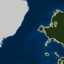
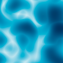
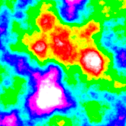
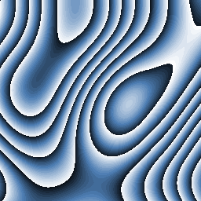
 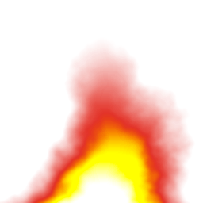
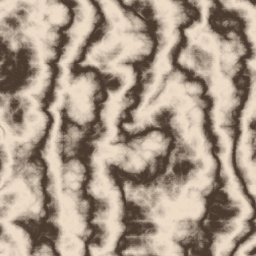
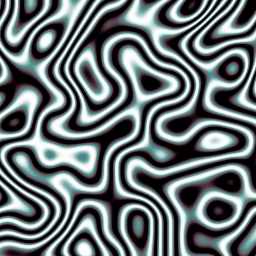
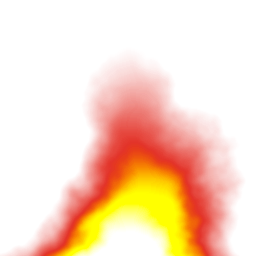
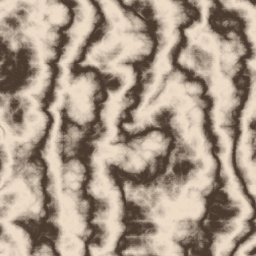
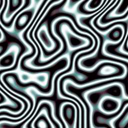
 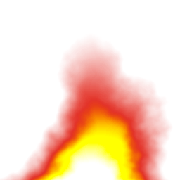
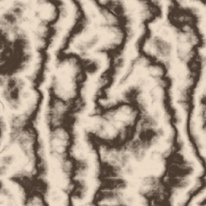
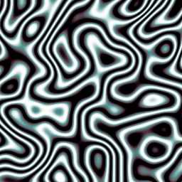
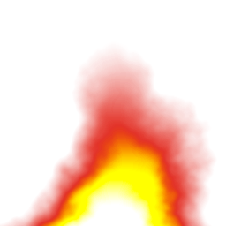
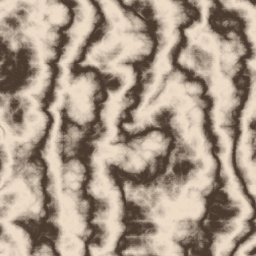
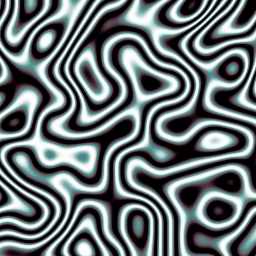